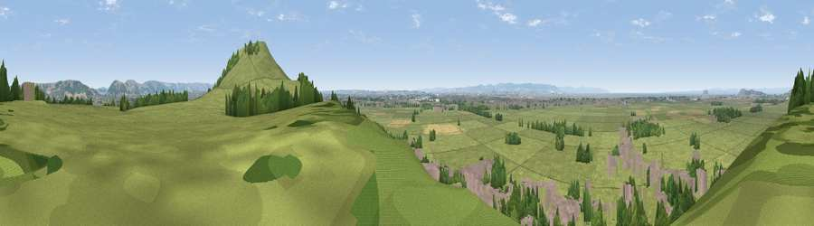

Viewpoint near Brent Knoll
#10205 in England · top 31% of its area beats it · near Brent KnollWhere it is
The exact computed spot (ST 33175 51375). Click the marker for map links.
The view, rendered

A 360° render of this exact spot computed from the terrain model, tree cover and land cover — summer colours, afternoon light, calibrated against photographs of famous viewpoints. Real trees, hedges and buildings will differ in detail.
The panorama
Grey silhouette: terrain skyline in each direction (720 bearings, Earth curvature and refraction included). Dashed green: skyline with trees (+15 m) and buildings (+8 m) as obstacles. Blue strip: how far the ground is visible on each bearing.
Where the view opens
Wedge length = distance to the farthest visible ground on that bearing (vegetation-aware). Rings at 10, 25 and 50 km.
What fills the view
69% grassland · 16% woodland · 12% built-up · 2% cropland · 2% water
Angular shares of the visible panorama (visual magnitude), not map area. Landscape diversity 0.41 (0–1 Shannon).
Key numbers
More beautiful places nearby
The staircase of upgrades: each row has a higher view potential than everything closer. Driving times are estimates from straight-line distance, calibrated against real road routing — check an actual route before setting out.
| Place | Direction | Drive | Score |
|---|---|---|---|
| Brent Knoll | ESE · 1 km | ~3 min | 77.7 |
| Bleadon Hill [Loxton Hill] | NNE · 7 km | ~14 min | 79.6 |
| Viewpoint near Holford | SW · 21 km | ~35 min | 80.8 |
| Viewpoint near Holford | SW · 21 km | ~35 min | 82.2 |
| Viewpoint near Holford | WSW · 22 km | ~36 min | 85.9 |
| Viewpoint near West Quantoxhead | WSW · 23 km | ~37 min | 87.9 |
| Viewpoint near West Quantoxhead | WSW · 23 km | ~38 min | 88.7 |
| The Knoll | SSE · 67 km | ~90 min | 91.0 |
51.25760, -2.95901 · source: screening · position refined by local search. Computed location — check access rights before visiting.